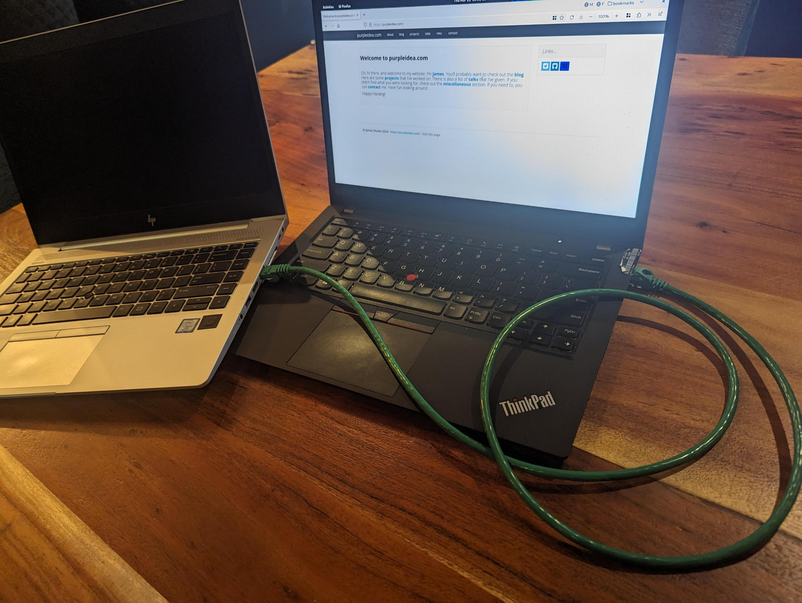
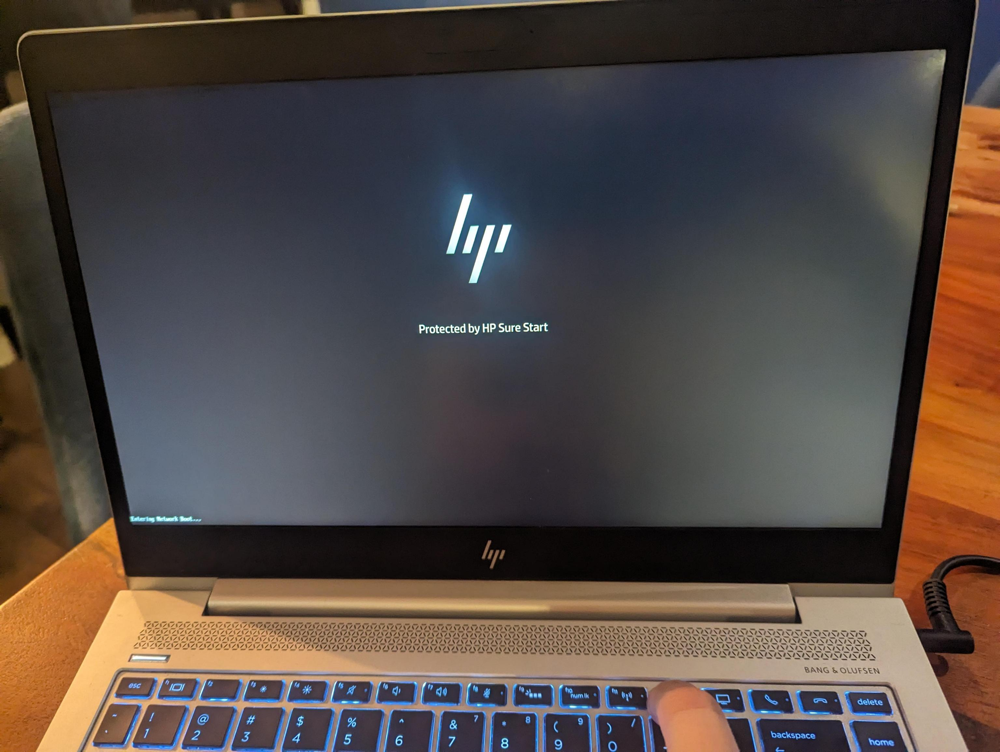

Today I’m announcing a new type of provisioning tool. This is both the culmination of a long road, and the start of a new era. Please read on for all of the details. Feel free to skip to the relevant sections you’re interested in if you don’t want all of the background.
The vision for this specific tool started around ten years ago. Previously, as a
sysadmin, I spent a lot of my time using a configuration management tool called
puppet. I eventually realized and accepted the shortcomings of the tool after
a failed attempt to combine puppet and some python scripts into a provisioning
and clustering tool that I was trying to build for greenfield environments. The
idea is that it would bootstrap a whole suite of infrastructure services for a
new data centre.
I then realized that I needed to build a new kind of tool, which itself could
be used to build the new kinds of tools and automations that I wanted. That base
tool that I designed, is a brand new kind of automation engine and language
called mgmt.
This provisioning tool is the first such standalone tool that I’m building in
mgmt. It’s so versatile and powerful, that the entire implementation is under
~1,000 lines of code.
Head down below to the internals section in Part 2 if you want the hacker stuff. Keep reading here in Part 1 to learn about the provisioning tool itself.
When setting up a new laptop, server, virtual machine, or even a container, the first step usually involves powering on and deploying an initial operating system to that entity.
After the base operating system has been deployed, the next step is to kick off the initial run of the configuration management tool of your choice, which will then configure the machine and set up all the various applications and services that you want. This typically begins on either the first boot of the newly installed machine, or right before the reboot to that first boot happens.
Everything from power on to the first run of the configuration management tool is generally called “provisioning”. Provisioning can refer to bare-metal provisioning, or to virtual machine provisioning. If you “ask” your cloud provider for a new machine, this step is also called provisioning. If you download a GNU+Linux distribution installer onto a USB key, and then use that key to boot the installer, and then install the OS onto a machine, that is also provisioning.
Some provisioning operations might also be simultaneously performed alongside tasks which are typically considered to be configuration management. The lines can sometimes be blurry.
Provisioning tools have existed for a long time. They are all generally pretty clunky to setup and not very ergonomic to use. Most tools can easily require at least a day of setup, and dedicated hardware to run on. Lots of fine-tuning can be required to get things working exactly how you want them to.
I wanted something better. A new, inexperienced user should be able to get things running perfectly in five minutes. Don’t believe me that it’s possible? Read on…
Most provisioning works by first setting up a TFTP server, DHCP server, and HTTP server. You should ideally setup a new package repository mirror beforehand, particularly if you want to do the operation more than once. Running rsync or some kind of caching HTTP proxy is highly recommended.
Once you get the configuration and all the path mangling correct, you then ask your target device to get an IP address over DHCP, and PXE boot to the initial TFTP server, which loads some files to the machine, and then over HTTP performs a Kickstart which is a fancy installer script that is downloaded and run, which in turn then downloads and installs some OS packages and a boot loader.
After some final light configuration steps, the machine reboots into your newly installed operating system. That’s a lot to setup and get right. Here’s how we automate that…
Today I’m introducing a new provisioning tool, called the mgmt provisioner. It
is distributed as a single binary. That’s all you need! It contains all of the
aforementioned pieces all glued together correctly, and all inside of that
single binary.
Nominally you’ll want to run it from a laptop which is connected to wifi. The laptop should have a spare ethernet port that you will connect to any machine that you want to provision.
Here’s how you use the tool:
Download the latest binary from here.
In a terminal make it executable.
Run it as root. I’ll explain why later.
Those terminal commands:
# get the latest version automatically:
version=$(wget -q https://api.github.com/repos/purpleidea/mgmt/releases/latest -O - | grep '"tag_name": ' | cut -d '"' -f 4,4)
# download
wget https://github.com/purpleidea/mgmt/releases/download/${version}/mgmt-linux-amd64-${version} -O mgmt
# make executable
chmod u+x mgmt
# run it!
sudo ./mgmt provisioner
Your provisioner is now running! By default, the tool will attempt to provision
a Fedora workstation for the x86_64 architecture.
(You can change these defaults, see below.)
Initially, the tool will display some default settings that it pre-selected, and prompt you for a password. This password is the password that you want to use for the newly provisioned machine. For example:
$ sudo ./mgmt provisioner
[sudo] password for james:
provisioner: interface: eth0
provisioner: cache prefix: /root/.cache/mgmt/provisioner/
provisioner: distro uid: fedora39-x86_64
provisioner: flavour: Workstation
provisioner: mirror: https://mirror.csclub.uwaterloo.ca/fedora/linux/
[provisioner] password: <type the password you want for the newly provisioned machine>
If any of these settings are not what you want, then press ^C to cancel the
provisioner at this stage. Of note, you might want to verify that the
interface field matches the name of the ethernet device in your laptop, and
that the distro is what you want for your target machine. Type the password you
want to use for the new machine and press enter.
At this point the tool will startup and then download some initial files to use for provisioning. After a short while (~2 min) depending on the speed of your computer and internet connection, a bunch of things will scroll past your screen and you will eventually see some text like:
12:34:56 engine: print[ready]: Msg: ready to provision!
At this point all you have to do is directly connect your laptops ethernet port to the ethernet port of the target computer.
|  |
| The two laptops are directly connected over ethernet. |
Then ask the target laptop to PXE boot from the network. You might need to press
a special key on the laptop when it first boots. On my target machine this is
F12. Some laptops have a “boot menu” that will bring up a list of options to
choose from. Sometimes that’s hidden behind the F9 key. You may even need to
first enable some of these buttons from your system BIOS. To enter the BIOS, you
might need to press <DEL> or F2. If I’m not familiar with the particular
machine, I usually mash a bunch of these various keys until I get lucky. You
should consult the documentation for your laptop to know for sure.
|  |
| This particular machine acknowledges that I'm pressing F12. |
At this point the machine will start provisioning. It’s entirely automated, and you won’t need to do a single thing other than wait. If you have a very fast internet connection, this whole process should take about ten to fifteen minutes. When it’s done, the target laptop will reboot, you can disconnect it from the provisioner laptop, and enjoy your new workstation!
| Fake timelapse of the fast provisioning process. |
The provisioning tool will cache copies of any files it needs to download from
the internet to complete the install. This will make future provisioning much
faster. Feel free to delete the cache at anytime. It’s found in the cache prefix directory which is shown when the tool first starts up.
If you’d like a different Fedora version and flavour, start up the provisioning
tool with the --version= and --flavour= arguments. Such as:
sudo ./mgmt provisioner --version=38 --flavour=Server
[sudo] password for james:
provisioner: interface: enp0s31f6
provisioner: cache prefix: /root/.cache/mgmt/provisioner/
provisioner: distro uid: fedora38-x86_64
provisioner: flavour: Server
There are additional options available as well. Consult the below options list.
I’m a big fan of Debian and other GNU+Linux distros. I had to start somewhere, and at the moment this only supports Fedora. It should be fairly easy to add support for other operating systems. Please consider sending a patch, or contact me to sponsor this work.
I don’t have a lot of hardware or time to test all of the many permutations this
can do. I’ve only tested recent x86_64 Fedora, with UEFI hardware. If you’ve
got aarch64, riscv, or are interested in other configurations, please let me
know. I’ve also not tested luks setups yet, or anything involving LVM.
If your host laptop doesn’t have an ethernet port, you can buy a USB “dongle” and use that instead. I have the “Plugable USBC-E2500” which seems to work well on Linux. If the target machine doesn’t have an ethernet device, this might be more difficult. See this article for more information.
I think so, yes. For a few reasons. Firstly, someone always has to do the provisioning. Almost every company out there with physical or virtual machines is running some sort of provisioning setup. This tool can be adapted to large enterprise environments as well. Now that it exists, I’m curious to see who ends up using it the most.
Secondly, it would be silly to depend on third-parties to run all of our provisioning for us. One of the main reasons we have, is because it has been too much work to do it ourselves. This tool makes provisioning trivially easy.
Provisioning is a foundational piece of any infrastructure. Good provisioning is needed if we want to build more ambitious infrastructures. When someone gives me an API to purchase servers, and a robot to rack them, this tool is where it will all get integrated. Society isn’t there yet, but I’ve got some other fun ideas planned in the meantime.
Some people believe that immutable, image-based operating systems are the way of the future. If that becomes the case, then this can be adapted to work with those too.
The process is as secure as the Fedora project allows. If you don’t manually
pick a mirror, then one will be chosen from the Fedora mirror manager
automatically. All of the packages and initial bootstrapping files are then
downloaded from that mirror over https. The initial bootstrapping files, which
are present in the Fedora repositories consist of vmlinuz, initrd.img,
install.img, and a few metadata files. Unfortunately
none of these files are signed cryptographically by the Fedora project. I
recommend you reach out to the team and (politely) request this feature. Once
it’s in place, we will be able to validate them before they are consumed by the
provisioning tool. No other provisioning tools can check this either!
This will be possible in the future. I plan to do this through the CLI library that I’m using. The rough sketch is here.
If you’d love a web ui to manage your provisioning, please contact me for a quote! Imagine running this somewhere in your datacentre, and being able to login to a webui to manage and kick off provisioning!
If you run the tool with --help, you will see a plethora of unrelated options.
This is a consequence of a new CLI library that I am using, and the way in which
I am using it. You can consider this as a bug that I plan to patch in the
future. For now, please ignore the superfluous options. Most of them are
legitimate, but you are erroneously seeing some related to the parent mgmt
tool which are not relevant when in provisioning mode.
This new provisioning tool has been built in the mgmt
language and engine. The output you’re seeing are the internals of that
mechanism working. What’s going on is outside the scope of this article, but
interested users may read about some of the internals of the mgmt project to
learn more. A future version of this tool will be able to optionally hide the
unnecessary output from the user.
I’ve got quite a lot planned to improve upon this. Today is the beginning of
what I considered minimally viable. There are big upcoming changes both in the
mgmt tool, and in this provisioning project. Among the first is that we want
to implement a faster type unification algorithm. It can take upwards of ~1.5
min in some cases, and this delay should drastically decrease once I spend some
time to implement a better algorithm if it hasn’t already landed.
It’s possible. Please report things if you run into them. I am releasing this early because I think it already provides a lot of value. It has worked impeccably for me, but I encourage you to help me fix any issues that you might find.
I recently gave two talks: one at CfgMgmtCamp 2024, and one at FOSDEM in the golang room. Both are available online and demonstrated an earlier version of the provisioning tool which is fully available today. The talks can be found here: https://purpleidea.com/talks/.
These are some of the currently available options. Consult the online documentation as these may change in the future:
--interface local ethernet interface to provision from, eg: eth0
--prefix local XDG_CACHE_HOME path
--version distribution version
--arch architecture to use
--flavour flavour of distribution (currently “Workstation” or “Server”)
--mirror https mirror for distro packages
--mac mac address to provision
--password the ‘openssl passwd -6’ salted password
--part partitioning scheme (currently btrfs or plain)
--packages list of additional distro packages to install (comma separated)
Why is this interesting, how does it work, and why is this blog post so long?
It’s interesting because this is a proof of concept of a new way to build software. People thought that configuration management was dying, but in fact, it was just badly defined and under-innovated. I’m attempting to redefine what it should mean.
With the mgmt engine we have idempotent units that do work, which we call resources. They are unique in that each one can be a continuously running process containing a traditional “main loop”.
These resources can be glued together very efficiently by our novel,
domain-specific-language (DSL) called mcl. It’s unique in that it runs
concurrently, is incredibly safe, and models event-driven systems as a core
proficiency.
It’s so well suited for the task, that this particular tool was built in under
~1,000 lines of mcl. In contrast, other well-known provisioning tools such as
cobbler and foreman each consist of around ~50,000 and ~235,000 LOC
respectively!
Those are both much more mature and featureful tools, and my lower line count
doesn’t factor in the size of the mgmt core, but it’s still an important
comparison. The common LOC in my core can be used for hundreds of different
projects, rather than committing an entire code base to a single task. This is a
more efficient way to build software.
Furthermore, mcl shows how easy it is to glue together a custom tool that does
exactly what you want. You could build a slightly different flavour of this tool
in almost no time.
The mgmt software can be used as a standalone project to run your mcl code
base, or mcl can be embedded inside of it to produce a purpose-built binary.
For this second case, you have to define a directory containing the CLI parsing
that you’d like your new tool to undergo, and an entry point into the mcl
code. For this we use an internal API called entry. It provides a few useful
methods to name and register your function. An edited excerpt looks like this:
//go:build embedded_provisioner
package coreprovisioner
import (
"embed"
"github.com/purpleidea/mgmt/entry"
"github.com/purpleidea/mgmt/lang/embedded"
)
const (
ModuleName = "provisioner" // name of this module (program)
Version = "v0.0.1" // version number of this module
Frontend = "lang" // name of the GAPI (graph API) to run
)
// List of files that make up the module of your program.
//go:embed metadata.yaml main.mcl files/*
var fs embed.FS
// Entry point into the actual program starts here.
//go:embed top.mcl
var top []byte
// localArgs is our struct which is used to modify the CLI parser. The
// definition of this struct automatically builds the CLI interface for your
// custom tool! This version was highly edited and some values have been elided
// to simplify this example and make it more readable for the blog post.
type localArgs struct {
// local ethernet interface to provision from, eg: enp0s31f6 or eth0
Interface *string `arg:"--interface" help:"..." func:"cli_interface"`
// eg: 192.168.42.0/24
Network *string `arg:"--network" help:"network with cidr to use" func:"cli_network"`
// should we open firewalld on our provisioner?
Firewalld bool `arg:"--firewalld" default:"true" help:"..." func:"cli_firewalld"`
// eg: "Workstation" or "Server"
Flavour *string `arg:"--flavour" help:"flavour of distribution" func:"cli_flavour"`
}
// provisioner is our cli parser translator and general frontend object.
type provisioner struct {
localArgs *localArgs
}
// Customize implements the Customizable interface which lets us manipulate the
// CLI.
func (obj *provisioner) Customize(a interface{}) (*cli.RunArgs, error) {
runArgs, ok := a.(*cli.RunArgs)
if !ok {
return nil, fmt.Errorf("received invalid struct of type: %T", a)
}
// Pick a default if this arg wasn't specified.
if s := obj.localArgs.Interface; s == nil {
devices, err := util.GetPhysicalEthernetDevices()
if err != nil {
return nil, err
}
if i := len(devices); i == 0 || i > 1 {
return nil, fmt.Errorf("couldn't guess ethernet device, got %d", i)
}
dev := devices[0]
obj.localArgs.Interface = &dev
}
obj.init.Logf("interface: %+v", *obj.localArgs.Interface)
// Make any changes here that we want to...
runArgs.RunLang.SkipUnify = true // speed things up for known good code
libConfig.TmpPrefix = true
runArgs.Config = libConfig // store any changes we made
return runArgs, nil
}
func init() {
fullModuleName := embedded.FullModuleName(ModuleName)
embedded.ModuleRegister(fullModuleName, fs)
var a interface{} = &localArgs{} // used for the CLI API
custom := &provisioner{ // implements the necessary API to work
localArgs: a.(*localArgs),
}
// Tell the `entry` API that we exist.
entry.Register(&entry.Data{
Program: ModuleName,
Version: Version,
Args: a,
Custom: custom,
Frontend: Frontend,
Top: top,
})
}
The full code can be seen in this git commit.
When you’re happy with your program, you run a special build with the build tag that you defined at the top.
$ GOTAGS='embedded_provisioner' make
You’re now ready to enjoy your new software!
Curious to see a few snippets from the core mcl logic? Here’s an edited
excerpt of how the DHCP server is built:
dhcp:server ":67" {
interface => $interface, # defined earlier
leasetime => "60s",
routers => [$router_ip,],
}
# If we're provisioning a known mac address, we only offer an IP to that one.
if $mac != "" {
dhcp:host "${name}" { # the hostname
mac => $mac,
ip => $ip, # cidr notation is required
nbp => $provision ?: if $bios {
$nbp_bios
} else {
$nbp_uefi
},
nbp_path => $provision ?: $nbp_path,
Depend => Tftp:Server[":69"], # tftp server defined elsewhere!
}
} else {
# Handle ANY mac address since we don't have one specified!
dhcp:range "${name}" {
network => "${network}", # eg: 192.168.42.0/24
skip => [$router,], # eg: 192.168.42.1/24
nbp => $provision ?: if $bios {
$nbp_bios
} else {
$nbp_uefi
},
nbp_path => $provision ?: $nbp_path,
Depend => Tftp:Server[":69"],
}
}
The automatic caching and proxy to the upstream mirrors adds-in an additional
http resource component. It looks like this:
http:proxy "/fedora/releases/${version}/Everything/${arch}/os/" {
sub => "/fedora/", # we remove this from the name!
head => $mirror,
cache => $distroarch_release_http_prefix, # eg: $prefix/http/fedora39-x86_64/release/
}
The vmlinuz file which is needed to boot the provisioning agent, gets
pulled-in like this:
exec "vmlinuz-${uid}" {
cmd => "/usr/bin/wget",
args => [
"--no-verbose",
"${repo_url}images/pxeboot/vmlinuz",
"-O",
$vmlinuz_file,
],
creates => $vmlinuz_file,
Depend => File[$distroarch_tftp_prefix],
Depend => Http:Server[":${http_port_str}"],
Before => Print["ready"],
}
As previously mentioned, the full code can be seen in this git commit.
Nothing in mgmt actually requires root access. Some of the tasks you want to
perform might. In this case, we want to bind to low numbered ports, so we use
our root permissions to get access there. Alternatively, I’ve had reasonably
good success with Linux capabilities. I’m not an expert here, but I think you
can use:
sudo setcap CAP_NET_BIND_SERVICE=+eip mgmt
on the freshly-minted binary, instead of running it with sudo. If you’re an expert in Linux capabilities, please ping me if you have any recommendations to improve the above command.
The most interesting thing about this particular provisioner code base, is that
it doesn’t even depend on the most powerful feature of the mcl language: its
event based nature. It just so happens, that this particular code base is
currently almost entirely static. I can’t wait to show you the agility that we
will possess with future dynamically changing programs. Many of my public talks
demonstrate this in different problem spaces.
In future iterations, we’ll add a little bit more code to let you programmatically decide your next steps. In general, think about a code base that first provisions a machine, waits for that step to complete, then configures it, and finally provisions the next stage, and so on… All in real-time. You may also wish to build unique optimizations and perhaps only provision new machines at night when the electricity usage is cheaper, or on Fridays. That’s easy:
import "datetime"
$is_friday = datetime.weekday(datetime.now()) == "friday" # changes in real-time!
include base.host("example1", struct{
repo => "fedora39-x86_64",
flavour => "server",
mac => "01:23:45:67:89:ab",
ip => "192.168.42.13/24",
part => "btrfs",
packages => ["vim-enhanced", "cowsay", "sl", "bash-completion",],
provision => $is_friday, # only provision on friday!
})
The way it’s glued together lets you programmatically build your infra as code, with real-time events (day of the week, load, error scenarios, etc) that are part of the language.
The next exciting step considers how we elegantly hand off to the newly
provisioned machine so that it either runs mgmt to configure itself, or it
becomes a new mgmt locus to take over and provision future machines. Stay
tuned.
If we had a ipmi,
OpenBMC, or Redfish
resource in mgmt, we’d be able to also automatically power-on new hardware for
you and monitor its lifecycle. I don’t have access to such hardware, but if you
do, and want this, please get in touch.
My last blog post about mgmt, was too long ago, what’s been taking so long? To be quite honest, I was mostly distracted by having to pay the rent. I’ve been publicly looking for funding and sponsorship for years, but the total amount I’ve ever received has not been significant. If you want to see progress here, you have to be part of the funding solution. Otherwise, there’s nothing to stop Libre Software from becoming proprietary.
Donations and sponsorship are encouraged!
I have a new program to help develop partners to be successful mgmt users,
consultants, developers, and so on.
If you sign-up to the partner program,
you’ll get early access to blog posts, release notes, and other news and
offerings around mgmt.
I hope this lengthy blog post inspired you to try this new tool, and to invest
your time and money into both this, and the larger mgmt
project.
Now that my ten-year project is finally bearing fruit, I hope that you’ll help it blossom into a world-changing endeavour.
Happy Hacking,
James
https://github.com/purpleidea/mgmt/
You can hire James and his team at m9rx corporation.
You can follow James on Mastodon for more frequent updates and other random thoughts.
You can follow James on Twitter for more frequent updates and other random thoughts.
You can support James on GitHub if you'd like to help sustain this kind of content.
You can support James on Patreon if you'd like to help sustain this kind of content.
Your comment has been submitted and will be published if it gets approved.
Click here to see the patch you generated.
{kind=link}
{kind=link}
{kind=link}
{kind=link}
Comments
Nothing yet.
Post a comment